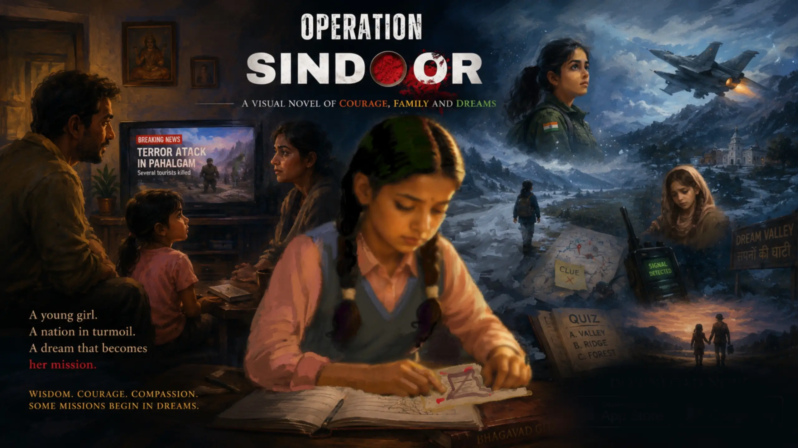
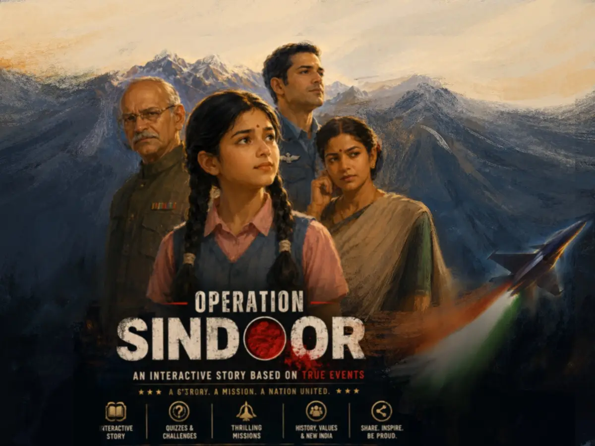
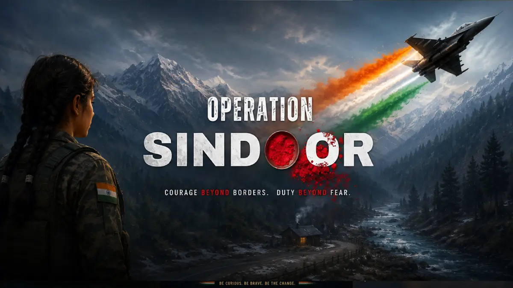
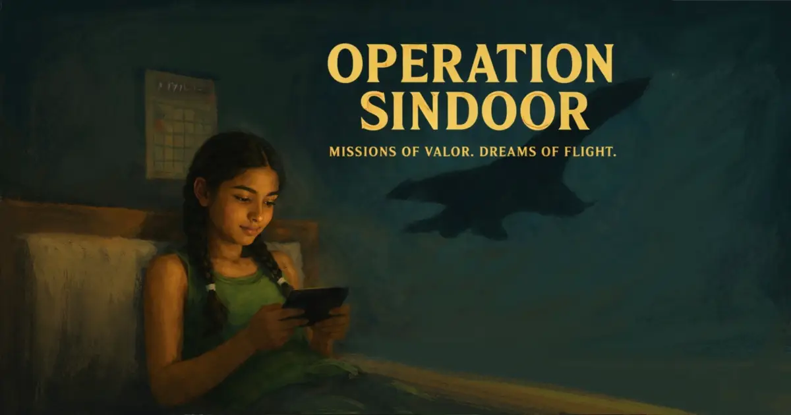
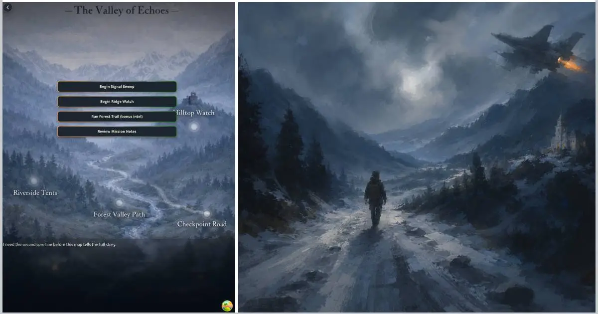
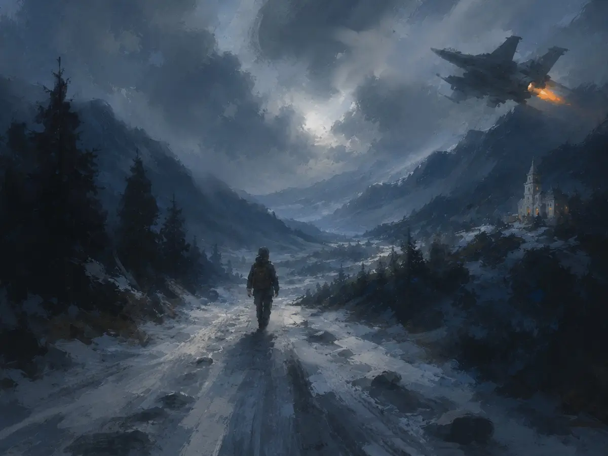

Painterly Visual Novel
Handcrafted painterly visuals inspired by loose oil painting techniques and cinematic composition.

Some stories begin in silence.
A young girl in Kerala watches the world change through television headlines, family conversations, and dreams that slowly become missions.
Operation Sindoor is a cinematic visual novel blending emotional storytelling, educational themes, symbolic dream exploration, mini-games, and painterly art inspired by traditional oil painting aesthetics.
When headlines become memories.
Set between quiet family moments and surreal dream-world investigations, Operation Sindoor follows Ila - a curious child trying to understand fear, courage, sacrifice, and truth.
As the nation reacts to tragedy and uncertainty, Ila imagines herself as a pilot and investigator exploring symbolic valleys, forests, temples, and forgotten paths in search of hidden clues.
Operation Sindoor is designed as an accessible mobile-first narrative experience inspired by Indian storytelling traditions and modern visual novels.

Story, learning, and dream investigation
Handcrafted painterly visuals inspired by loose oil painting techniques and cinematic composition.
Experience intimate conversations, national uncertainty, hope, and imagination through the eyes of a child.
Explore symbolic dream locations including valleys, forests, rivers, temples, and hidden pathways.
Quizzes and interactive segments covering history, geography, strategy, and observation.
Ambient soundscapes, subtle music, environmental storytelling, and cinematic pacing.
Designed for accessible play sessions with optimized performance for mobile devices.
During the day, Ila listens quietly as adults discuss fear, conflict, news reports, and uncertainty.
At night, those conversations transform into dream-world missions where clues hide beneath snow, footsteps disappear into forests, and forgotten voices ask for help.
What begins as imagination slowly becomes a journey through memory, courage, and compassion.
Operation Sindoor blends visual novel storytelling with lightweight interactive gameplay.
The experience focuses on emotional immersion rather than fast-paced action, creating a calm cinematic rhythm inspired by visual novels and interactive storytelling.
The game embraces a handcrafted painterly aesthetic inspired by loose oil painting techniques, atmospheric lighting, cinematic framing, and Indian visual storytelling traditions.
Warm family interiors contrast with cold dream landscapes, creating a visual language that moves between comfort, uncertainty, and hope.
Early scenes from the game




Answer one question. Unlock a glimpse of the game world.


Begin the mission.
Available on mobile devices.